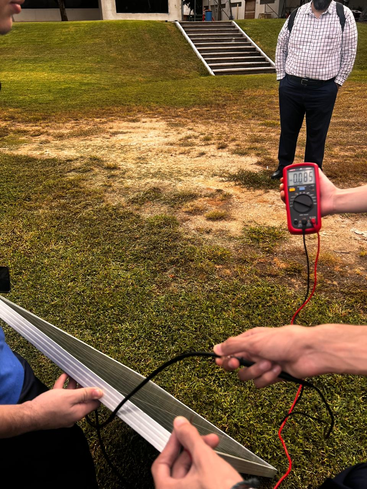
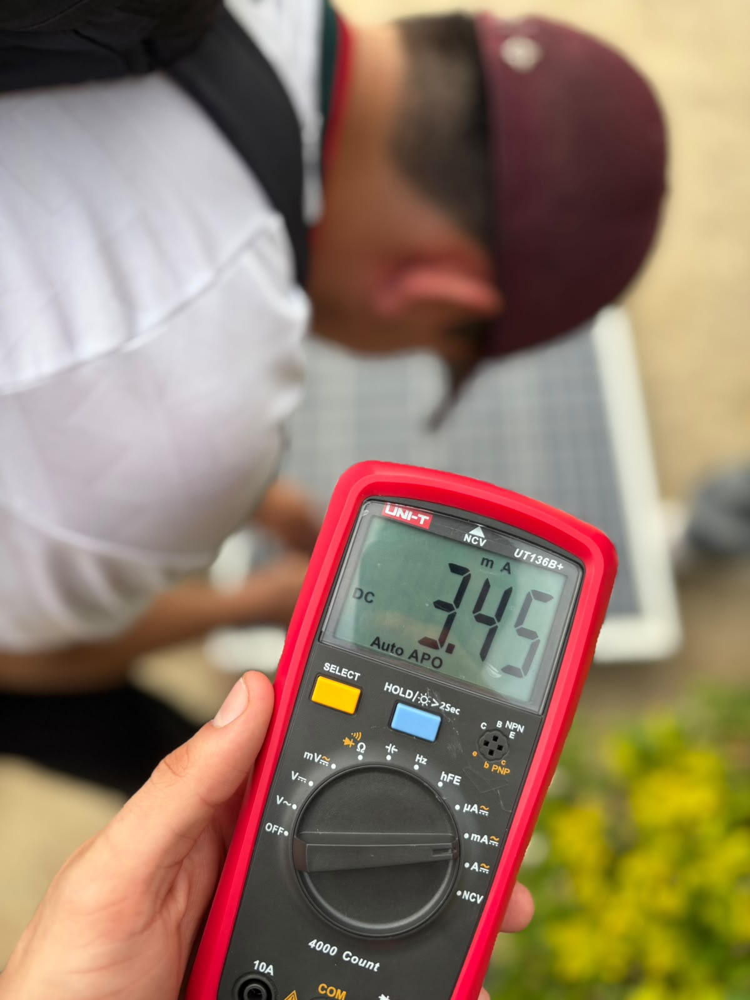
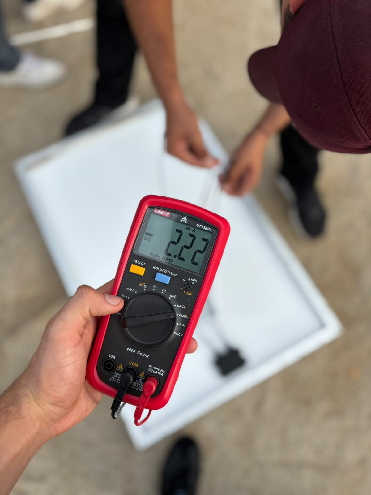
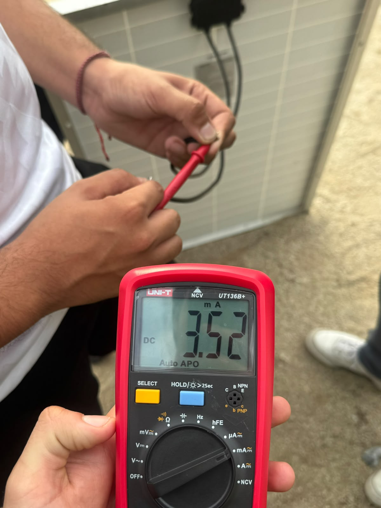

TE1020 · Práctica de campo · 11 nov 2026
Simulador de celda solar
Reproduce el ensayo con el panel fotovoltaico y compara el voltaje observado en tres orientaciones.
Orientación del panel
El modelo usa 0.119 V y 3.52 mA como escalas independientes. La corriente es proporcional a la luz directa y el voltaje sigue una curva logarítmica ilustrativa. Las escalas vienen de fotos distintas.
Los ángulos de las tres posiciones son ilustrativos. Modelo geométrico ideal. La luz directa relativa se calcula con el coseno del ángulo y cae a cero cuando la cara activa queda de espaldas al Sol.
Orientación ilustrativa. La inclinación exacta no se midió en las fotos.

Comparación de lecturas
Se usa el valor absoluto del voltaje visible. Las barras comparten una escala de 0 a 0.100 V.
* La foto 5 muestra el panel sostenido en ángulo. Su asociación con la prueba perpendicular es provisional.
Lecturas sin orientación identificable
El multímetro muestra 0.096 V en las fotos 7 y 8, 0.097 V en la 9, 0.100 V en la 11 y 0.119 V en la 12. En estas tomas no se ve la posición del panel.
La simulación reproduce lecturas de referencia.
Ver todas las fotos de campo
Espectro de la luz solar
Modelo de cuerpo negro a 5778 K, normalizado al máximo cerca de 502 nm. Representa una aproximación fuera de la atmósfera. Referencia de NASA
Corriente continua · evidencia de otro equipo
Para documentar la corriente, usamos fotos de otro equipo porque en nuestra práctica el multímetro no se configuró en miliamperios (mA).
Para calcular potencia, hace falta un par de lecturas de voltaje y corriente bajo la misma carga y condición de ensayo.





